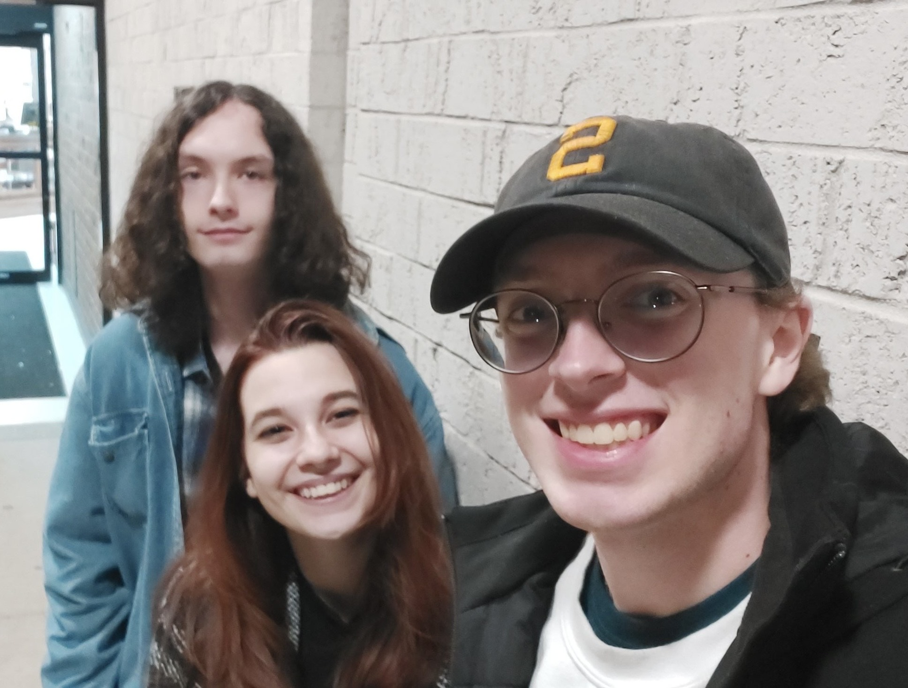

My Band and Our Inspiration
{kind=link}
My band that I have with my two best friends was created by pure coincidence. After playing music together one morning, we decided to keep doing so into the future. While our band is currently named Appalachia, we were originally called Appalachian Emo. We ended up shortening the name so it could be easier to say. The band consists of me and my two best friends, from left to right, Kevin and Eden. While I'm hesitant to share full songs or riffs that we've written, I'll attach a few short snippets of songs we've written. While we have a lot of different inspirations, the main bands that inspire us are The Foo Fighters, Lizzy McAlpine, Cigarettes After Sex, and Crywank.
Extended Warranty on Love
This song is probably our most complete work, along with the first song we ever played together. It started when I had an idea while taking a shower that morning funnily enough. The idea was for a song about a man who's only friend was his girlfriend, but they broke up, so now the only calls he gets are from spam bots asking about his cars extended warranty. From there, I went to see Kevin before he left after staying in town for a bit, and we started playing around with some different guitar lines and bass lines. We were king of stumped on lyrics though until we got Eden to sing over it after I told her the concept. The end of the recording goes a bit off the rails, but the main meat of the song is present.
Tempress and Love Song
While the full tracks are not present, here are a few examples of other songs we've written. Starting on the left, we have Tempress, and then on the right, an untitled track that we're calling Love Song for now. These are probably are our most complete songs besides Extended Warranty on Love. We plan on recording them and mixing them in a professional way, and then eventually releasing them on Spotify.
Cigarettes After Sex Inspired
This is one of the riffs I've written for a song we haven't started yet. It still needs another section and a little bit of adjustment, but with some minimal work it could be ready to officially record in no time.
Crywank Inspired
This is one of the only complete songs I've written by myself. While I'm not 100% happy with the finger picking sections right now, it is close enough to what the final song will sound like. The only major work left is to write lyrics, but I haven't been inspired yet, so it'll wait on the backburner until I'm ready.